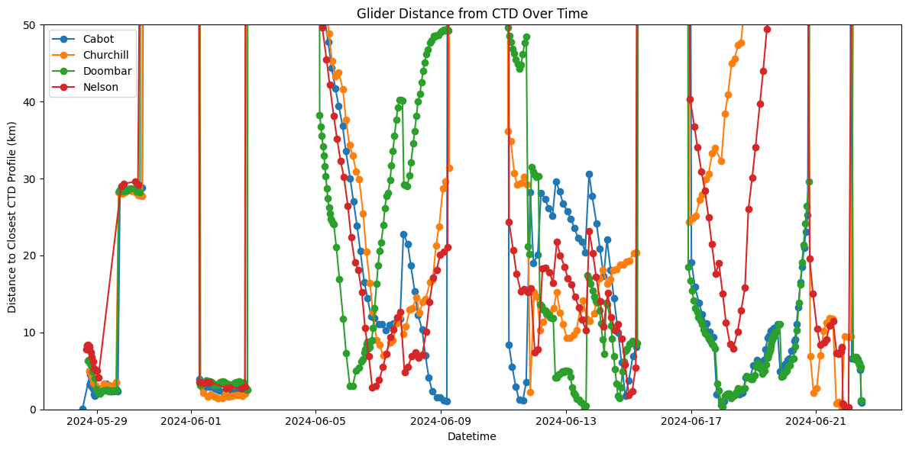
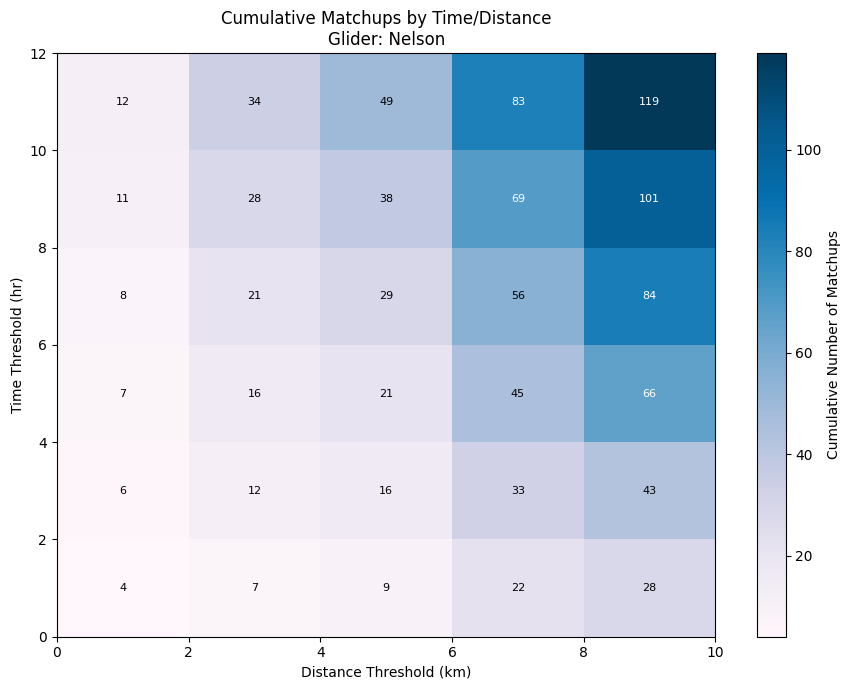
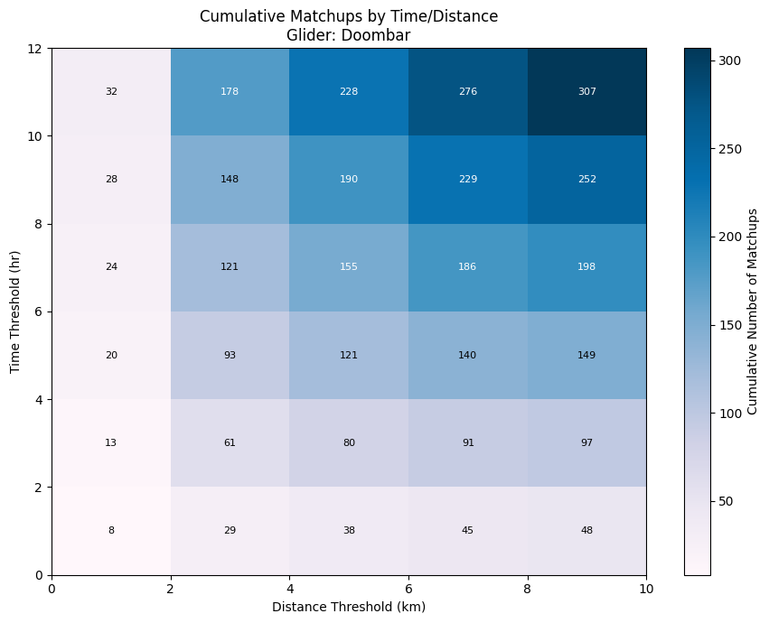
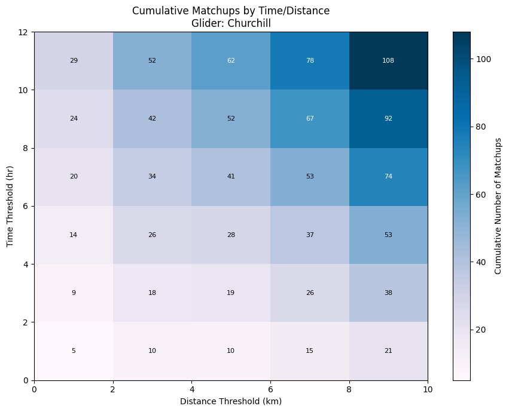
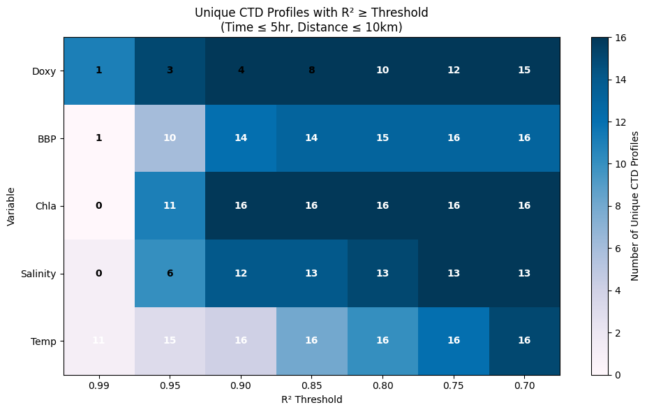
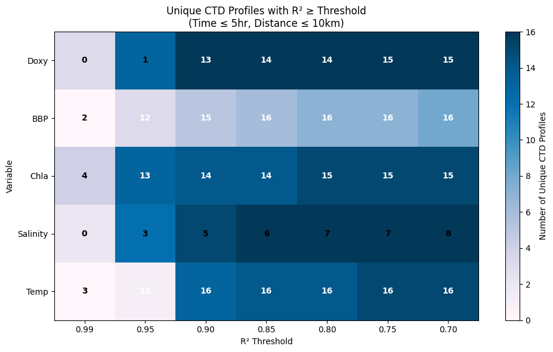
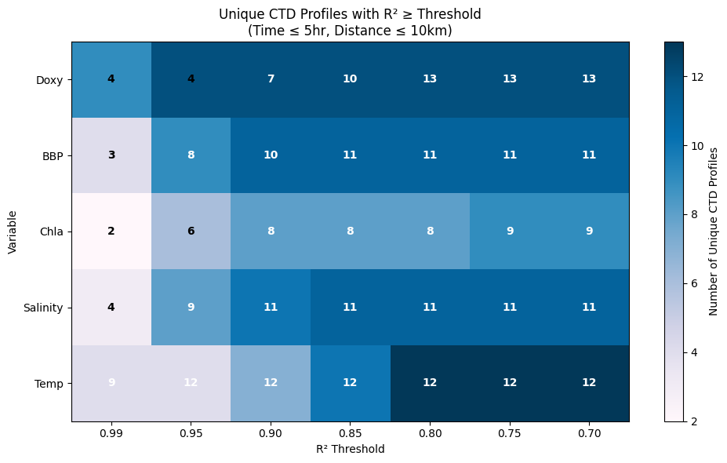
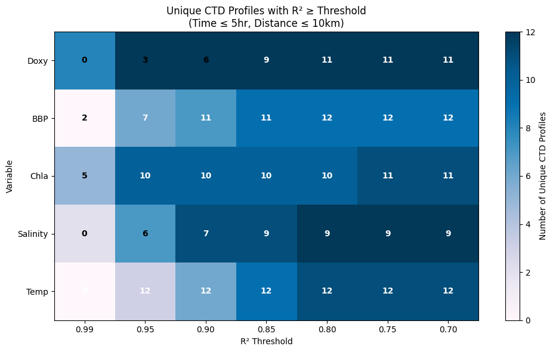
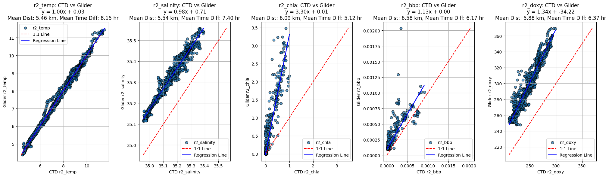

import xarray as xr
import polars as pl
import glob
import pandas as pd
import re
from datetime import datetime
import os
import matplotlib.pyplot as plt
from geopy.distance import geodesicOpen Gliders files
# Get list of NetCDF files
nc_files = glob.glob("C:/Users/flapet/OneDrive - NOC/Documents/IDAPro/lib/db_building/data/glider/nc_profiled/*.nc")
# Read and concatenate datasets
for file in nc_files:
ds = xr.open_dataset(file, decode_times=True)
glider_name = ds.attrs.get("trajectory").split("_")[0]
# Select variables of interest
vars_of_interest = ["TIME", "DEPTH", "TEMP", "CHLA", "BBP700", "ABS_SALINITY", "MOLAR_DOXY", "PROFILE_NUMBER", "LATITUDE", "LONGITUDE"]
ds_sel = ds[vars_of_interest]
# Convert to pandas DataFrame, then to polars DataFrame
df_pd = ds_sel.to_dataframe().reset_index()
df_pl = pl.from_pandas(df_pd)
#Use only profiling data (-1 is surfacing behavior)
df_pl = df_pl.filter(pl.col("PROFILE_NUMBER") > 0)
df_pl = df_pl.with_columns((pl.col("PROFILE_NUMBER").cast(pl.String) + "_" + glider_name).alias("profile_id"))
print(f"{file} processed, shape: {df_pl.shape}")
# Concatenate DataFrames
if 'df_concat' in locals():
df_concat = pl.concat([df_concat, df_pl])
else:
df_concat = df_pl
# Add a 'glider_name' column by extracting the part before '_' in 'profile_id'
df_concat = df_concat.with_columns(
pl.col("profile_id").str.split("_").list.get(1).alias("glider_name")
)C:/Users/flapet/OneDrive - NOC/Documents/IDAPro/lib/db_building/data/glider/nc_profiled\Cabot_645_Profiled.nc processed, shape: (1438541, 12)
C:/Users/flapet/OneDrive - NOC/Documents/IDAPro/lib/db_building/data/glider/nc_profiled\Churchill_647_Profiled.nc processed, shape: (1142019, 12)
C:/Users/flapet/OneDrive - NOC/Documents/IDAPro/lib/db_building/data/glider/nc_profiled\Doombar_648_Profiled.nc processed, shape: (1952630, 12)
C:/Users/flapet/OneDrive - NOC/Documents/IDAPro/lib/db_building/data/glider/nc_profiled\Nelson_646_Profiled.nc processed, shape: (1951435, 12)Open CTD files
def read_ctd(filepath):
# Read column names from line 27 (R skips 26 lines, so read line 27 as header)
cols = pd.read_csv(filepath, skiprows=26, nrows=0)
cols_name = cols.columns.tolist()
# Read actual data (R skips 28 lines, so data starts at line 29)
dat = pd.read_csv(filepath, skiprows=28, header=None)
dat.columns = cols_name
# Read raw lines for metadata
with open(filepath, "r") as f:
raw_dat = f.readlines()
# Extract LON
lon_line = next(line for line in raw_dat if "LON" in line)
lon = float(re.search(r"=(.*)", lon_line).group(1).strip())
# Extract LAT
lat_line = next(line for line in raw_dat if "LAT" in line)
lat = float(re.search(r"=(.*)", lat_line).group(1).strip())
# Add to dataframe
dat["lon"] = lon
dat["lat"] = lat
# Extract DATE (second match, as in R)
date_lines = [line for line in raw_dat if "DATE" in line]
date_str = re.search(r"=(.*)", date_lines[1]).group(1).strip()
date_val = pd.to_datetime(date_str).date()
# Extract TIME
time_line = next(line for line in raw_dat if "TIME" in line)
time_str = re.search(r"= (.*)", time_line).group(1).strip()
# Parse TIME (e.g. "1025" → "10:25")
time_str_formatted = re.sub(r"^([0-9]{2})([0-9]+)$", r"\1:\2", time_str)
time_val = pd.to_datetime(time_str_formatted, format="%H:%M").time()
# Combine date and time
datetime_val = datetime.combine(date_val, time_val)
# Add datetime to dataframe
dat["datetime"] = datetime_val
return dat# Define the parent directory
parent_dir = "C:/Users/flapet/OneDrive - NOC/Documents/IDAPro/lib/db_building/data/CTD/DY180/74EQ20240522_ct1"
# List to hold each parsed DataFrame
dataframes = []
idx = 1
# Loop through all files in the parent directory and subdirectories
for root, dirs, files in os.walk(parent_dir):
for file in files:
if file.endswith(".csv"):
file_path = os.path.join(root, file)
try:
df = read_ctd(file_path)
df['profile_idx'] = idx
dataframes.append(df)
idx += 1
except Exception as e:
print(f"Failed to read {file_path}: {e}")
# Combine all dataframes into one
combined_df = pd.concat(dataframes, ignore_index=True)
# Display summary
print(f"Loaded {len(dataframes)} files. Combined shape: {combined_df.shape}")Loaded 52 files. Combined shape: (21863, 19)Make a plot to show distance of gliders
# Group by 'profile_id' and 'glider_name', then aggregate median datetime, longitude, latitude
summary = (
df_concat
.group_by(['profile_id', 'glider_name'])
.agg([
pl.col('TIME').median().alias('median_datetime'),
pl.col('LONGITUDE').median().alias('median_longitude'),
pl.col('LATITUDE').median().alias('median_latitude')
])
.sort('median_datetime')
)
# Convert to pandas DataFrame for easier display if needed
summary_pd = summary.to_pandas()
summary_pd.head()| profile_id | glider_name | median_datetime | median_longitude | median_latitude | |
|---|---|---|---|---|---|
| 0 | 1.0_Cabot | Cabot | 2024-05-28 12:59:48.193740288 | -24.001507 | 60.000038 |
| 1 | 1.0_Nelson | Nelson | 2024-05-28 16:10:32.929382912 | -23.953222 | 59.933823 |
| 2 | 2.0_Nelson | Nelson | 2024-05-28 16:44:54.573363968 | -23.945343 | 59.931000 |
| 3 | 3.0_Nelson | Nelson | 2024-05-28 16:49:53.522613248 | -23.944508 | 59.930759 |
| 4 | 4.0_Nelson | Nelson | 2024-05-28 17:15:59.081421312 | -23.940367 | 59.930614 |
# Create a summary table from combined_df with one line per profile (grouped by 'datetime', 'lon', 'lat')
ctd_summary = (
combined_df[['datetime', 'lon', 'lat', 'profile_idx']]
.drop_duplicates()
.reset_index(drop=True)
)
ctd_summary.head()| datetime | lon | lat | profile_idx | |
|---|---|---|---|---|
| 0 | 2024-05-26 12:11:00 | -22.49730 | 59.18032 | 1 |
| 1 | 2024-05-27 04:37:00 | -24.00044 | 60.00012 | 2 |
| 2 | 2024-05-27 07:40:00 | -24.00042 | 60.00014 | 3 |
| 3 | 2024-05-28 03:33:00 | -24.00016 | 60.00016 | 4 |
| 4 | 2024-05-28 05:28:00 | -24.00020 | 60.00018 | 5 |
# Prepare arrays for glider and CTD profile locations and times
glider_times = summary_pd['median_datetime'].values
glider_lons = summary_pd['median_longitude'].values
glider_lats = summary_pd['median_latitude'].values
ctd_times = ctd_summary['datetime'].values
ctd_lons = ctd_summary['lon'].values
ctd_lats = ctd_summary['lat'].values
# For each glider profile, find the closest CTD profile in time and compute distance
closest_ctd_idx = []
closest_time_diff = []
distance_km = []
import numpy as np
for g_time, g_lat, g_lon in zip(glider_times, glider_lats, glider_lons):
# Find index of closest CTD profile in time
time_diffs = abs(ctd_times - g_time)
idx = time_diffs.argmin()
closest_ctd_idx.append(idx)
closest_time_diff.append(time_diffs[idx])
# Compute distance in km, handle nan coordinates
glider_pos = (g_lat, g_lon)
ctd_pos = (ctd_lats[idx], ctd_lons[idx])
if np.isfinite(g_lat) and np.isfinite(g_lon) and np.isfinite(ctd_lats[idx]) and np.isfinite(ctd_lons[idx]):
dist = geodesic(glider_pos, ctd_pos).km
else:
dist = np.nan
distance_km.append(dist)
# Add results to summary_pd
summary_pd['closest_ctd_idx'] = closest_ctd_idx
summary_pd['ctd_time_diff'] = closest_time_diff
summary_pd['ctd_distance_km'] = distance_km
summary_pd[['profile_id', 'glider_name', 'median_datetime', 'closest_ctd_idx', 'ctd_time_diff', 'ctd_distance_km']].head()| profile_id | glider_name | median_datetime | closest_ctd_idx | ctd_time_diff | ctd_distance_km | |
|---|---|---|---|---|---|---|
| 0 | 1.0_Cabot | Cabot | 2024-05-28 12:59:48.193740288 | 5 | 0 days 01:15:48.193740288 | 0.068635 |
| 1 | 1.0_Nelson | Nelson | 2024-05-28 16:10:32.929382912 | 5 | 0 days 04:26:32.929382912 | 7.849181 |
| 2 | 2.0_Nelson | Nelson | 2024-05-28 16:44:54.573363968 | 5 | 0 days 05:00:54.573363968 | 8.298804 |
| 3 | 3.0_Nelson | Nelson | 2024-05-28 16:49:53.522613248 | 5 | 0 days 05:05:53.522613248 | 8.341018 |
| 4 | 4.0_Nelson | Nelson | 2024-05-28 17:15:59.081421312 | 5 | 0 days 05:31:59.081421312 | 8.445026 |
# Get the last CTD profile datetime
last_ctd_time = ctd_times[-1]
# Filter summary_pd to only include glider profiles up to the last CTD profile datetime
mask = summary_pd['median_datetime'] <= last_ctd_time
filtered = summary_pd[mask]
# Plot
plt.figure(figsize=(12, 6))
for name, group in filtered.groupby('glider_name'):
plt.plot(group['median_datetime'], group['ctd_distance_km'], label=name, marker='o', linestyle='-')
plt.xlabel('Datetime')
plt.ylabel('Distance to Closest CTD Profile (km)')
plt.ylim(0, 50)
plt.title('Glider Distance from CTD Over Time')
plt.legend()
plt.tight_layout()
plt.show()
Generate a list of possible candidate profiles
import pandas as pd
from geopy.distance import geodesic
def find_candidate_glider_ctd_pairs(glider_df, ctd_df, time_thresh_hr=2, dist_thresh_km=5):
"""
Identify all pairs of glider and CTD profiles within specified time (hours) and distance (km) thresholds.
Returns a DataFrame of matching pairs with details.
"""
matches = []
for _, g_row in glider_df.iterrows():
for _, c_row in ctd_df.iterrows():
# Time difference
time_diff_hr = abs((g_row['median_datetime'] - c_row['datetime']).total_seconds()) / 3600.0
if time_diff_hr > time_thresh_hr:
continue
# Skip if coordinates are missing
if pd.isnull(g_row['median_latitude']) or pd.isnull(g_row['median_longitude']) \
or pd.isnull(c_row['lat']) or pd.isnull(c_row['lon']):
continue
# Distance in kilometers
dist_km = geodesic(
(g_row['median_latitude'], g_row['median_longitude']),
(c_row['lat'], c_row['lon'])
).km
if dist_km > dist_thresh_km:
continue
matches.append({
'glider_profile_id': g_row['profile_id'],
'glider_name': g_row['glider_name'],
'ctd_profile_id': c_row.get('profile_idx', None), # default to None if not present
'time_diff_hr': time_diff_hr,
'dist_km': dist_km
})
return pd.DataFrame(matches)
# Use the find_candidate_glider_ctd_pairs function with filtered and ctd_summary
candidates = find_candidate_glider_ctd_pairs(
filtered,
ctd_summary,
time_thresh_hr=12,
dist_thresh_km=20
)
print(f"Found {len(candidates)} candidate glider-CTD profile pairs within 12hr and 20km.")
# Show the first 5 candidates
candidates[:5]Found 1038 candidate glider-CTD profile pairs within 12hr and 20km.| glider_profile_id | glider_name | ctd_profile_id | time_diff_hr | dist_km | |
|---|---|---|---|---|---|
| 0 | 1.0_Cabot | Cabot | 4 | 9.446720 | 0.076368 |
| 1 | 1.0_Cabot | Cabot | 5 | 7.530054 | 0.074613 |
| 2 | 1.0_Cabot | Cabot | 6 | 1.263387 | 0.068635 |
| 3 | 1.0_Nelson | Nelson | 5 | 10.709147 | 7.844838 |
| 4 | 1.0_Nelson | Nelson | 6 | 4.442480 | 7.849181 |
def plot_heatmap_glider_df(glider_name, df, time_bins, dist_bins):
"""
Plot cumulative 2D histogram (heatmap) of matchups from a DataFrame for a specific glider.
Parameters:
- glider_name: str, the glider to filter
- df: pd.DataFrame with required columns:
'glider_profile_id', 'glider_name', 'ctd_profile_id', 'time_diff_hr', 'dist_km'
- time_bins: array-like, bin edges for time (in hours)
- dist_bins: array-like, bin edges for distance (in km)
"""
# Filter DataFrame for selected glider
df_g = df[df['glider_name'] == glider_name]
if df_g.empty:
print(f"No matchups found for glider '{glider_name}'.")
return
# Extract arrays for histogram
time_diffs = df_g['time_diff_hr'].values
dist_kms = df_g['dist_km'].values
# Compute 2D histogram
H, xedges, yedges = np.histogram2d(time_diffs, dist_kms, bins=[time_bins, dist_bins])
# Cumulative sum along both axes
H_cum = H.cumsum(axis=0).cumsum(axis=1)
# Plot heatmap
X, Y = np.meshgrid(yedges, xedges)
plt.figure(figsize=(9, 7))
plt.pcolormesh(X, Y, H_cum, cmap='PuBu', shading='auto')
plt.colorbar(label='Cumulative Number of Matchups')
plt.xlabel('Distance Threshold (km)')
plt.ylabel('Time Threshold (hr)')
plt.title(f'Cumulative Matchups by Time/Distance\nGlider: {glider_name}')
# Annotate each cell with value
for i in range(H_cum.shape[0]):
for j in range(H_cum.shape[1]):
val = int(H_cum[i, j])
if val > 0:
x_center = (yedges[j] + yedges[j+1]) / 2
y_center = (xedges[i] + xedges[i+1]) / 2
color = 'white' if val > H_cum.max() / 2 else 'black'
plt.text(x_center, y_center, str(val), ha='center', va='center', fontsize=8, color=color)
plt.tight_layout()
plt.show()time_bins = np.arange(0, 13, 2)
dist_bins = np.arange(0, 11, 2)
# Choose a specific glider, e.g., "Nelson"
glider_of_interest = "Nelson"
plot_heatmap_glider_df(glider_of_interest, candidates, time_bins, dist_bins)
plot_heatmap_glider_df("Doombar", candidates, time_bins, dist_bins)
plot_heatmap_glider_df("Churchill", candidates, time_bins, dist_bins)
plot_heatmap_glider_df("Cabot", candidates, time_bins, dist_bins)Look at depth bin match up
# Interpolate DEPTH values per profile_id in df_concat (polars DataFrame)
# We'll use group_by and apply interpolation using polars' .interpolate() method
df_concat = (
df_concat
.sort(['profile_id', 'TIME'])
.with_columns([
pl.col('DEPTH')
.interpolate()
.over('profile_id')
.alias('DEPTH_interp')
])
)# Add a 'depth_bin' column to df_concat, binning 'DEPTH' in 50m intervals
df_concat = df_concat.with_columns(
(-(pl.col("DEPTH_interp") // 5)).cast(pl.Int32).alias("depth_bin"))
# Add a 'depth_bin' column to combined_df, binning 'CTDPRS' in 50m intervals
combined_df['depth_bin'] = pd.to_numeric(combined_df['CTDPRS'], errors='coerce') // 5
combined_df['depth_bin'] = combined_df['depth_bin'].astype('Int32')# Group by 'profile_id', 'glider_name', and 'depth_bin', then aggregate median for selected variables
glider_binned = (
df_concat
.group_by(['profile_id', 'glider_name', 'depth_bin'])
.agg([
pl.col('TEMP').median().alias('median_temp'),
pl.col('ABS_SALINITY').median().alias('median_salinity'),
pl.col('CHLA').median().alias('median_chla'),
pl.col('BBP700').median().alias('median_bbp'),
pl.col('MOLAR_DOXY').median().alias('median_doxy')
])
.sort(['profile_id', 'depth_bin'])
)
# Remove rows with any missing values in the aggregated table
glider_binned = glider_binned.drop_nulls()ctd_binned = (
combined_df
.groupby(['datetime', 'lon', 'lat', 'depth_bin', 'profile_idx'], as_index=False)
.agg({
' CTDTMP': 'median',
' CTDSAL': 'median',
' CTDTURB': 'median',
' CTDOXY': 'median',
' CTDFLUOR': 'median'
})
)
ctd_binned = pl.from_pandas(ctd_binned)# Convert candidates to polars DataFrame
candidates_pl = pl.from_pandas(candidates)
# Join all depth bins for each glider_profile_id from glider_binned
# This will add all depth-bin data for each candidate glider profile
candidates_with_bins = candidates_pl.join(
glider_binned,
left_on="glider_profile_id",
right_on="profile_id",
how="inner"
)# Join ctd_binned data to candidates_with_bins using ctd_profile_id and depth_bin
final_matched = candidates_with_bins.join(
ctd_binned,
left_on=["ctd_profile_id", "depth_bin"],
right_on=["profile_idx", "depth_bin"],
how="inner"
)import pybroom
from sklearn.linear_model import LinearRegression
import numpy as np
def type2_regression_r2_pybroom(x, y):
"""
Compute R2 for type 2 regression (major axis regression) using pybroom.
"""
# Remove NaNs
mask = np.isfinite(x) & np.isfinite(y)
x_clean = x[mask]
y_clean = y[mask]
if len(x_clean) < 2:
return np.nan
# Type 2 regression slope
s_yx = np.std(y_clean, ddof=1) / np.std(x_clean, ddof=1)
r = np.corrcoef(x_clean, y_clean)[0, 1]
slope = np.sign(r) * s_yx
intercept = np.mean(y_clean) - slope * np.mean(x_clean)
# Create a simple linear model for pybroom compatibility
# We'll use the type 2 regression parameters we calculated
y_pred = slope * x_clean + intercept
# Calculate R2
ss_res = np.sum((y_clean - y_pred) ** 2)
ss_tot = np.sum((y_clean - np.mean(y_clean)) ** 2)
r2 = 1 - ss_res / ss_tot if ss_tot > 0 else np.nan
return r2
# Updated analysis using pybroom concepts
# Group the final_matched DataFrame by 'glider_profile_id' and 'ctd_profile_id'
grouped = final_matched.to_pandas().groupby(['glider_profile_id', 'ctd_profile_id'])
# Define var_pairs: pairs of columns to compare between glider and CTD datasets
var_pairs = [
('median_temp', ' CTDTMP', 'r2_temp'),
('median_salinity', ' CTDSAL', 'r2_salinity'),
('median_chla', ' CTDFLUOR', 'r2_chla'),
('median_bbp', ' CTDTURB', 'r2_bbp'),
('median_doxy', ' CTDOXY', 'r2_doxy')
]
results = []
for keys, group in grouped:
row = {'glider_profile_id': keys[0], 'ctd_profile_id': keys[1]}
# Add time and distance from the first row in group
first_row = group.iloc[0]
row['time_diff_hr'] = first_row['time_diff_hr']
row['dist_km'] = first_row['dist_km']
for g_col, c_col, out_col in var_pairs:
x = group[g_col].to_numpy()
y = group[c_col].to_numpy()
row[out_col] = type2_regression_r2_pybroom(x, y)
results.append(row)
# Convert to DataFrame
r2_df = pd.DataFrame(results)
r2_df.head()c:\Users\flapet\OneDrive - NOC\Documents\IDAPro\lib\db_building\db_env\lib\site-packages\numpy\lib\function_base.py:2897: RuntimeWarning: invalid value encountered in divide
c /= stddev[:, None]
c:\Users\flapet\OneDrive - NOC\Documents\IDAPro\lib\db_building\db_env\lib\site-packages\numpy\lib\function_base.py:2898: RuntimeWarning: invalid value encountered in divide
c /= stddev[None, :]
C:\Users\flapet\AppData\Local\Temp\ipykernel_19088\2122300192.py:18: RuntimeWarning: invalid value encountered in scalar divide
s_yx = np.std(y_clean, ddof=1) / np.std(x_clean, ddof=1)
C:\Users\flapet\AppData\Local\Temp\ipykernel_19088\2122300192.py:18: RuntimeWarning: divide by zero encountered in scalar divide
s_yx = np.std(y_clean, ddof=1) / np.std(x_clean, ddof=1)| glider_profile_id | ctd_profile_id | time_diff_hr | dist_km | r2_temp | r2_salinity | r2_chla | r2_bbp | r2_doxy | |
|---|---|---|---|---|---|---|---|---|---|
| 0 | 1.0_Churchill | 6 | 6.745727 | 4.995948 | 0.230377 | 0.686763 | -0.421579 | 0.753172 | -0.682516 |
| 1 | 1.0_Doombar | 5 | 11.836677 | 6.322710 | NaN | NaN | NaN | NaN | NaN |
| 2 | 1.0_Doombar | 6 | 5.570010 | 6.326953 | NaN | NaN | NaN | NaN | NaN |
| 3 | 10.0_Doombar | 7 | 11.180101 | 2.053647 | 0.987247 | 0.798226 | 0.969626 | 0.862134 | 0.711562 |
| 4 | 100.0_Churchill | 20 | 11.356362 | 11.727578 | 0.814471 | -0.508003 | 0.855410 | 0.777578 | 0.944940 |
def plot_r2_heatmap(r2_df, time_thresh_hr=5, dist_thresh_km=10, r2_min=0.7, r2_max=0.99, r2_step=0.01):
"""
Plot a heatmap showing the number of unique CTD profiles that have R2 above given thresholds.
Each cell is annotated with the count.
"""
# Filter by time and distance thresholds
df = r2_df[(r2_df['time_diff_hr'] <= time_thresh_hr) & (r2_df['dist_km'] <= dist_thresh_km)]
# Define specific R2 thresholds and variable names as requested
r2_thresholds = [0.99, 0.95, 0.9, 0.85, 0.8, 0.75, 0.7]
variables = ['r2_temp', 'r2_salinity', 'r2_chla', 'r2_bbp', 'r2_doxy']
var_labels = ['Temp', 'Salinity', 'Chla', 'BBP', 'Doxy']
# Initialize heatmap matrix
heatmap = np.zeros((len(variables), len(r2_thresholds)), dtype=int)
# For each variable and threshold, count unique CTD profiles with R2 >= threshold
for i, var in enumerate(variables):
for j, thresh in enumerate(r2_thresholds):
mask = df[var] >= thresh
unique_ctd = df.loc[mask, 'ctd_profile_id'].nunique()
heatmap[i, j] = unique_ctd
# Create the plot
plt.figure(figsize=(10, 6))
im = plt.imshow(heatmap, aspect='auto', cmap='PuBu',
extent=[-0.5, len(r2_thresholds)-0.5, -0.5, len(variables)-0.5])
plt.colorbar(im, label='Number of Unique CTD Profiles')
# Set axis labels and ticks
plt.yticks(range(len(variables)), var_labels)
plt.xticks(range(len(r2_thresholds)), [f'{t:.2f}' for t in r2_thresholds])
plt.xlabel('R² Threshold')
plt.ylabel('Variable')
plt.title(f'Unique CTD Profiles with R² ≥ Threshold\n(Time ≤ {time_thresh_hr}hr, Distance ≤ {dist_thresh_km}km)')
# Annotate each cell with the exact count
for i in range(len(variables)):
for j in range(len(r2_thresholds)):
count = heatmap[i, j]
# Choose text color based on background intensity
text_color = 'white' if count > heatmap.max() / 2 else 'black'
plt.text(j, i, str(count), ha='center', va='center',
color=text_color, fontsize=10, fontweight='bold')
plt.tight_layout()
plt.show()# Filter the r2_df for each glider and run the heatmap function
gliders = ['Nelson', 'Doombar', 'Churchill', 'Cabot']
for glider in gliders:
# Filter the dataset for the current glider
filtered_r2_df = r2_df[r2_df['glider_profile_id'].str.contains(f"_{glider}$")]
print(f"\n=== R² Heatmap for {glider} ===")
plot_r2_heatmap(
filtered_r2_df,
time_thresh_hr=5,
dist_thresh_km=10
)
=== R² Heatmap for Nelson ===
=== R² Heatmap for Doombar ===
=== R² Heatmap for Churchill ===
=== R² Heatmap for Cabot ===
Visualising the correlation
filtered_r2_df = r2_df[
(r2_df['r2_temp'] >= 0.95) |
(r2_df['r2_salinity'] >= 0.9) |
(r2_df['r2_chla'] >= 0.9) |
(r2_df['r2_bbp'] >= 0.9) |
(r2_df['r2_doxy'] >= 0.9)
]
print(f"Filtered DataFrame contains {len(filtered_r2_df)} rows.")
filtered_r2_df.head()Filtered DataFrame contains 845 rows.| glider_profile_id | ctd_profile_id | time_diff_hr | dist_km | r2_temp | r2_salinity | r2_chla | r2_bbp | r2_doxy | |
|---|---|---|---|---|---|---|---|---|---|
| 3 | 10.0_Doombar | 7 | 11.180101 | 2.053647 | 0.987247 | 0.798226 | 0.969626 | 0.862134 | 0.711562 |
| 4 | 100.0_Churchill | 20 | 11.356362 | 11.727578 | 0.814471 | -0.508003 | 0.855410 | 0.777578 | 0.944940 |
| 5 | 100.0_Churchill | 21 | 4.623029 | 12.006675 | 0.970102 | 0.909576 | 0.804524 | 0.898272 | 0.109022 |
| 6 | 100.0_Churchill | 22 | 10.226971 | 7.501200 | 0.972238 | 0.890185 | 0.929320 | 0.887400 | 0.203537 |
| 9 | 102.0_Churchill | 21 | 9.637535 | 18.113315 | 0.974903 | 0.894770 | 0.851089 | 0.941623 | -0.028293 |
# Initialize a dictionary to store DataFrames for each variable
variable_dfs = {}
churchill_filtered = r2_df[r2_df['glider_profile_id'].str.contains("Churchill")]
# Iterate over each variable
for var in ['r2_temp', 'r2_salinity', 'r2_chla', 'r2_bbp', 'r2_doxy']:
# Initialize an empty list to store the rows with the highest R² values for the current variable
selected_rows = []
# Iterate over each unique CTD profile ID
for ctd_id in churchill_filtered['ctd_profile_id'].unique():
# Filter rows for the current CTD profile ID
ctd_rows = churchill_filtered[churchill_filtered['ctd_profile_id'] == ctd_id]
# Select the row with the highest R² value for the current variable
max_row = ctd_rows.loc[ctd_rows[var].idxmax()]
selected_rows.append(max_row)
# Create a DataFrame from the selected rows and store it in the dictionary
variable_dfs[var] = pd.DataFrame(selected_rows).drop_duplicates()
# Access individual DataFrames using variable_dfs['r2_temp'], variable_dfs['r2_salinity'], etc.def get_binned_data(variable_dfs, glider_binned, ctd_binned):
"""
Link variable_dfs with glider_binned and ctd_binned data to get full binned profile data.
Parameters:
- variable_dfs: dict, DataFrames for each variable containing paired profiles.
- glider_binned: polars.DataFrame, binned data for glider profiles.
- ctd_binned: polars.DataFrame, binned data for CTD profiles.
Returns:
- dict, updated variable_dfs with linked binned data.
"""
updated_dfs = {}
for var, df in variable_dfs.items():
# Convert the current DataFrame to polars for efficient joining
df_pl = pl.from_pandas(df)
# Join with glider_binned to get binned glider data
df_with_glider_bins = df_pl.join(
glider_binned,
left_on="glider_profile_id",
right_on="profile_id",
how="inner"
)
# Join with ctd_binned to get binned CTD data
df_with_ctd_bins = df_with_glider_bins.join(
ctd_binned,
left_on=["ctd_profile_id", "depth_bin"],
right_on=["profile_idx", "depth_bin"],
how="inner"
)
# Convert back to pandas for compatibility
updated_dfs[var] = df_with_ctd_bins.to_pandas()
return updated_dfs
# Example usage
linked_variable_dfs = get_binned_data(variable_dfs, glider_binned, ctd_binned)linked_variable_dfs['r2_temp'].head()| glider_profile_id | ctd_profile_id | time_diff_hr | dist_km | r2_temp | r2_salinity | r2_chla | r2_bbp | r2_doxy | glider_name | ... | median_bbp | median_doxy | datetime | lon | lat | CTDTMP | CTDSAL | CTDTURB | CTDOXY | CTDFLUOR | |
|---|---|---|---|---|---|---|---|---|---|---|---|---|---|---|---|---|---|---|---|---|---|
| 0 | 9.0_Churchill | 6 | 11.227399 | 3.113512 | 0.988175 | 0.853081 | 0.899825 | 0.769347 | 0.876936 | Churchill | ... | 0.000521 | 365.635010 | 2024-05-28 11:44:00 | -24.00032 | 60.0002 | 9.4511 | 35.1753 | 0.000280 | 291.00 | 0.70590 |
| 1 | 9.0_Churchill | 6 | 11.227399 | 3.113512 | 0.988175 | 0.853081 | 0.899825 | 0.769347 | 0.876936 | Churchill | ... | 0.000522 | 365.716980 | 2024-05-28 11:44:00 | -24.00032 | 60.0002 | 9.4263 | 35.1796 | 0.000233 | 287.65 | 0.50905 |
| 2 | 9.0_Churchill | 6 | 11.227399 | 3.113512 | 0.988175 | 0.853081 | 0.899825 | 0.769347 | 0.876936 | Churchill | ... | 0.000540 | 365.972992 | 2024-05-28 11:44:00 | -24.00032 | 60.0002 | 9.4256 | 35.1874 | 0.000178 | 286.40 | 0.34980 |
| 3 | 9.0_Churchill | 6 | 11.227399 | 3.113512 | 0.988175 | 0.853081 | 0.899825 | 0.769347 | 0.876936 | Churchill | ... | 0.000475 | 366.453003 | 2024-05-28 11:44:00 | -24.00032 | 60.0002 | 9.4049 | 35.1914 | 0.000152 | 284.35 | 0.26545 |
| 4 | 9.0_Churchill | 6 | 11.227399 | 3.113512 | 0.988175 | 0.853081 | 0.899825 | 0.769347 | 0.876936 | Churchill | ... | 0.000371 | 364.624023 | 2024-05-28 11:44:00 | -24.00032 | 60.0002 | 9.3873 | 35.1936 | 0.000144 | 283.90 | 0.22860 |
5 rows × 24 columns
